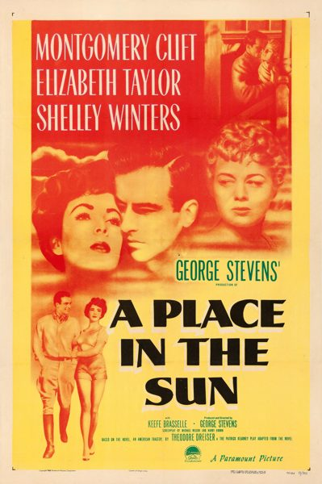

A Place in the Sun

Starring: Montgomery Clift, Elizabeth Taylor, Shelley Winters
Director: George Stevens
Writer: Michael Wilson, Harry Brown, Theodore Dreiser
Producer: George Stevens
A Place in the Sun is a 1951 American tragedy film directed and produced by George Stevens from a screenplay by Harry Brown and Michael Wilson, based on the 1925 novel An American Tragedy by Theodore Dreiser and its 1926 stage adaptation by Patrick Kearney. It stars Montgomery Clift, Elizabeth Taylor, Shelley Winters and Keefe Brasselle.
Trivia
- Won the Academy Award for Best Director.
- Won the Academy Award for Best Cinematography, Black-and-White.
- Won the Academy Award for Best Film Editing.
- Won the Academy Award for Best Writing, Adapted Screenplay.
- Won the Academy Award for Best Costume Design, Black-and-White.
- Won the Academy Award for Best Original Dramatic or Comedy Score.
- Selected for the National Board of Review: Top Ten Films.
- Won the National Board of Review Award for Best Film.
- Also nominated for: Academy Award for Best Actor; Academy Award for Best Actress; Academy Award for Best Picture.
- Based on An American Tragedy (1925 novel by Theodore Dreiser).
- On November 14, 1949, a letter from the Production Code Administration's Joseph I. Breen identified a worrisome issue with the dialogue between Alice and her doctor.
- Breen cautioned against direct references to abortion, specifically the line in the script in which Alice says, "Doctor, you've got to help me." In the finished film, the line became, "Somebody's got to help me", and while it is implied that Alice does not want the baby, the film avoids mentioning it.
- In 1965, director George Stevens threatened to sue any television stations that inserted commercials into the film without his approval.
Previous Showings
4 Runs • 3 Festivals
Original Billings: 1 run (September 26, 1951)
Original Run: September 26, 1951 (Wednesday - Friday)
All runs on record (4):
- September 26, 1951 (Wednesday - Friday)Montgomery Clift, Elizabeth Taylor
- August 24 - 25, 2000Summer 2000w/ Rebel Without a Cause
- November 26 - 28, 2004Marlon Brando: His First Decade in Films, plus Nine Musicals with Fred Astaire and Ginger Rogersw/ The Wild One
- April 16 - 18, 2011Elizabeth Taylorw/ Cat on a Hot Tin Roof